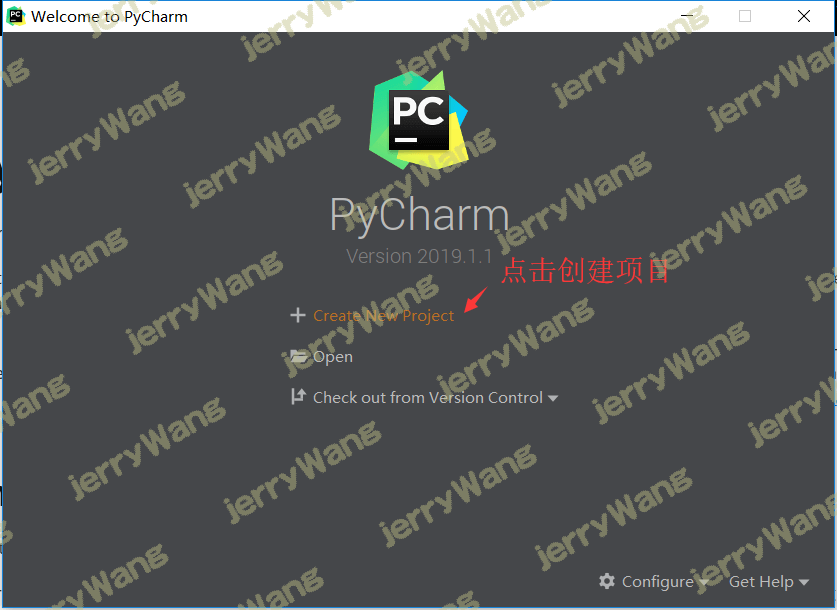
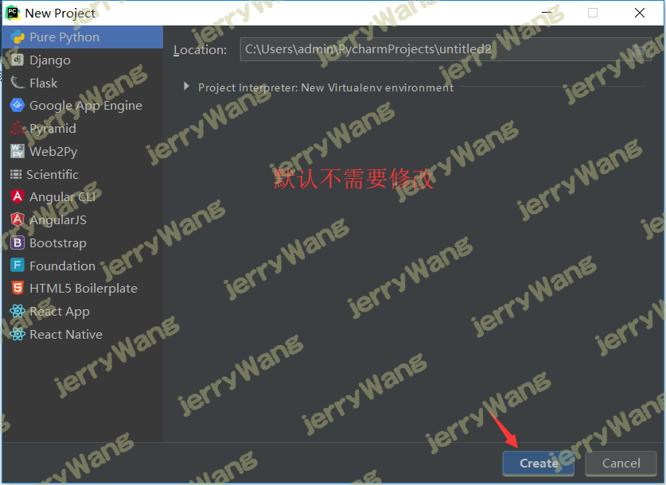
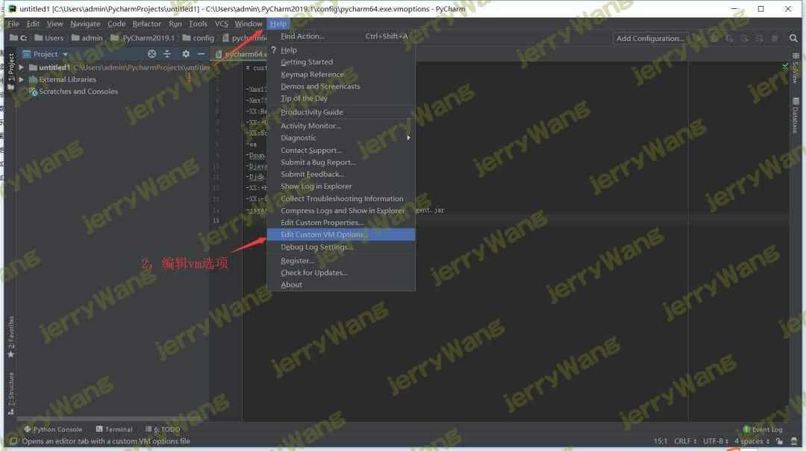
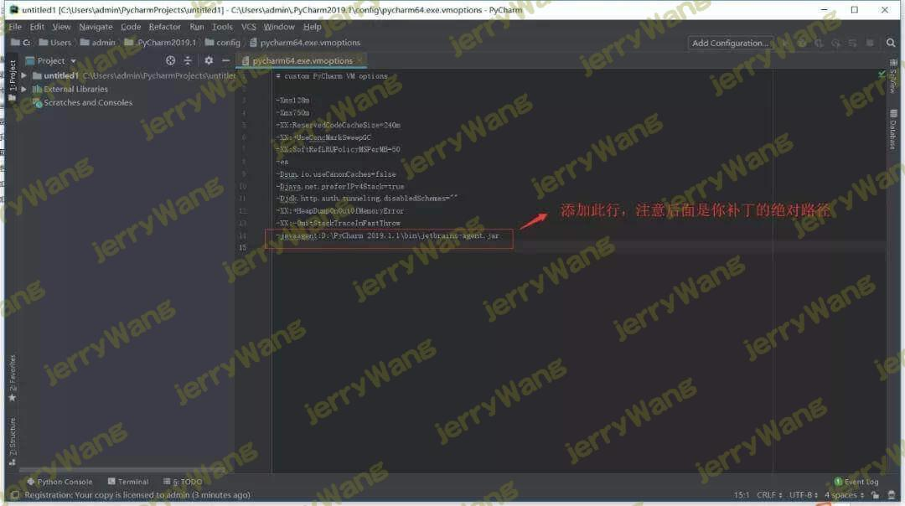
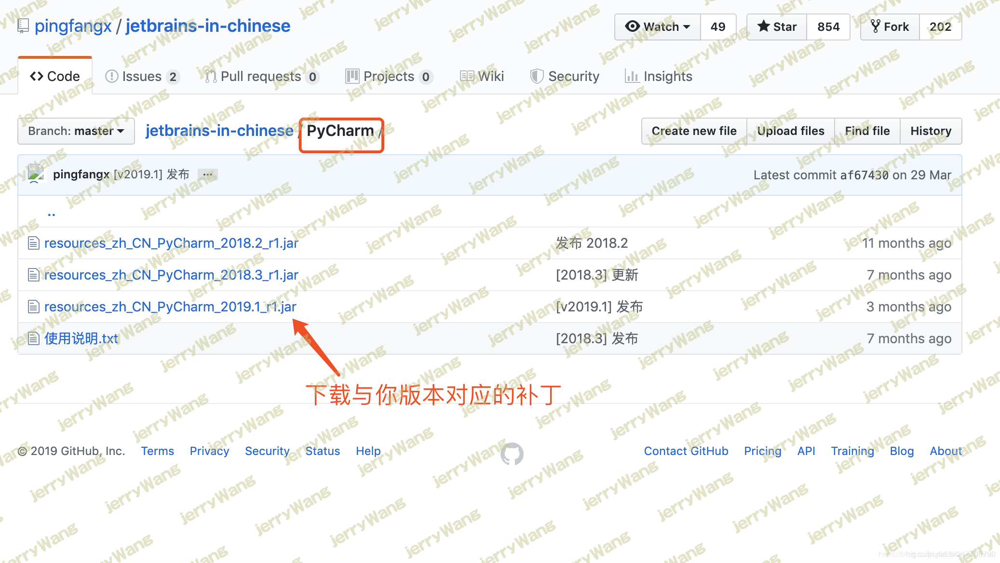
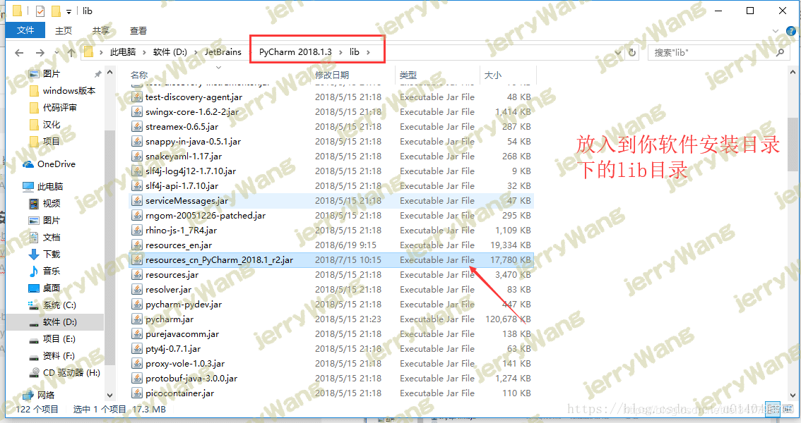
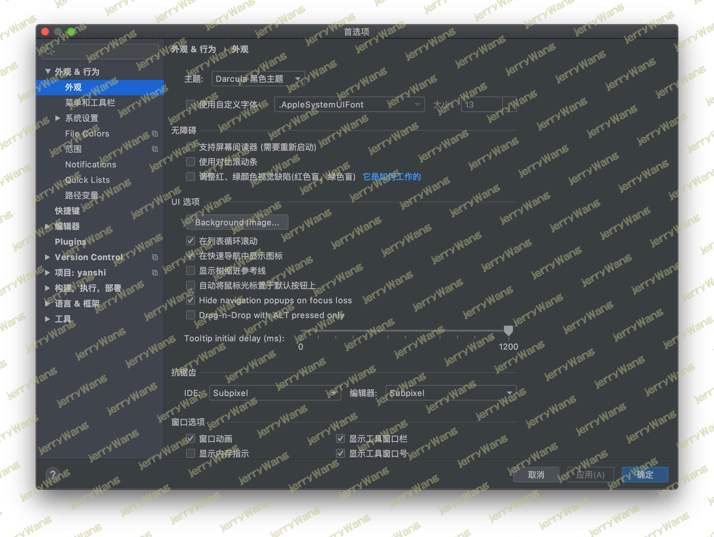
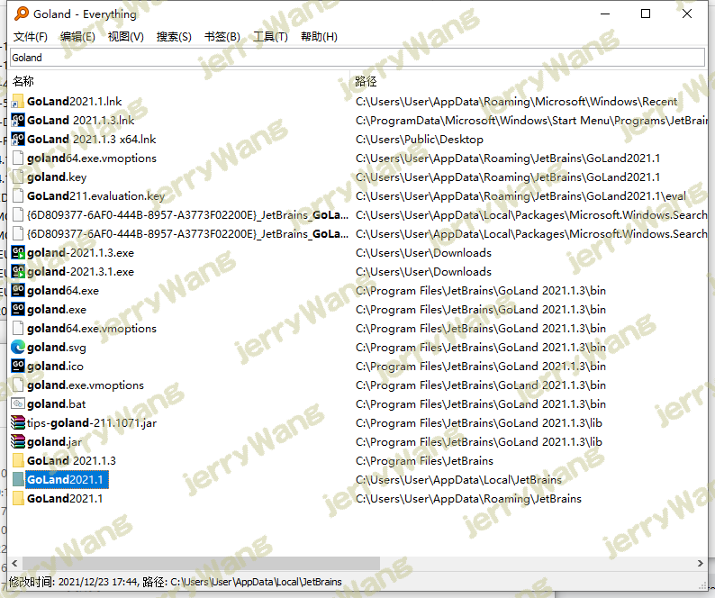
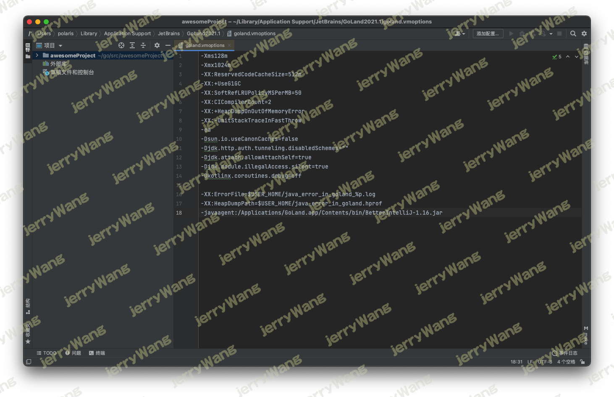

Pycharm永久激活及汉化
永久激活
随着2019版的到来，之前的永久激活教程也不生效了，所以今天为大家带来一种新的永久激活方式。
Pycharm2019.3.1 链接:https://pan.baidu.com/s/1kn3U3GQUOt1Z0S8WI6QUHw 密码:4joj
激活前准备工作
- 激活出现问题可留言或留言中查看
- 配置文件修改已经不在bin目录下直接修改，而是通过pycharm修改
- 如果输入code一直弹出来，请去hosts里移除jetbrains相关的项目
1.下载新版破解补丁
链接: https://pan.baidu.com/s/1MlQ3nDepwZQcYYLSWYC1ZA 提取码: 3ysa
下载补丁文件 jetbrains-agent.jar 并将它放置到 pycharm安装目录的\bin目录下（位置可随意，放这里是怕误操作删除了破解文件）。
2.进入项目界面
如果你之前已经使用有效期激活过可跳过此步骤，如果你是刚下载的pycharm，则需要点击激活窗口的“Evaluate for free”免费试用，然后再创建一个空项目，这样就可以进入到pycharm的工作页面



3.修改配置文件
进入到项目界面后，点击Pycharm最上面的菜单栏中的 “Help” -> “Edit Custom VM Options …”，如果提示是否要创建文件，请点”Yes”。

在打开的vmoptions编辑窗口末行添加：-javaagent:你pycharm的安装目录\jetbrains-agent.jar

请仔细检查补丁路径是否正确，如果错误则会出现pycharm打不开的情况，这时候可以删除用户目录下的pycharm文件夹
修改完配置文件之后重启pycharm，切记、切记
4.输入激活码
修改完配置文件之后重启pycharm，点击菜单栏中的 “Help” -> “Register …”，选择最后一种License server激活方式，地址填入：http://jetbrains-license-server （应该会自动填上），或者点击按钮：”Discover Server”来自动填充地址，完成激活
如果服务器激活方式无法激活，还可以选择Activation code方式激活，复制下面激活码即可
用二、激活码.txt 二、激活码.txt 二、激活码.txt
1 | 520E5894E2-eyJsaWNlbnNlSWQiOiI1MjBFNTg5NEUyIiwibGljZW5zZWVOYW1lIjoicGlnNiIsImFzc2lnbmVlTmFtZSI6IiIsImFzc2lnbmVlRW1haWwiOiIiLCJsaWNlbnNlUmVzdHJpY3Rpb24iOiJVbmxpbWl0ZWQgbGljZW5zZSB0aWxsIGVuZCBvZiB0aGUgY2VudHVyeS4iLCJjaGVja0NvbmN1cnJlbnRVc2UiOmZhbHNlLCJwcm9kdWN0cyI6W3siY29kZSI6IklJIiwicGFpZFVwVG8iOiIyMDg5LTA3LTA3In0seyJjb2RlIjoiUlMwIiwicGFpZFVwVG8iOiIyMDg5LTA3LTA3In0seyJjb2RlIjoiV1MiLCJwYWlkVXBUbyI6IjIwODktMDctMDcifSx7ImNvZGUiOiJSRCIsInBhaWRVcFRvIjoiMjA4OS0wNy0wNyJ9LHsiY29kZSI6IlJDIiwicGFpZFVwVG8iOiIyMDg5LTA3LTA3In0seyJjb2RlIjoiREMiLCJwYWlkVXBUbyI6IjIwODktMDctMDcifSx7ImNvZGUiOiJEQiIsInBhaWRVcFRvIjoiMjA4OS0wNy0wNyJ9LHsiY29kZSI6IlJNIiwicGFpZFVwVG8iOiIyMDg5LTA3LTA3In0seyJjb2RlIjoiRE0iLCJwYWlkVXBUbyI6IjIwODktMDctMDcifSx7ImNvZGUiOiJBQyIsInBhaWRVcFRvIjoiMjA4OS0wNy0wNyJ9LHsiY29kZSI6IkRQTiIsInBhaWRVcFRvIjoiMjA4OS0wNy0wNyJ9LHsiY29kZSI6IkdPIiwicGFpZFVwVG8iOiIyMDg5LTA3LTA3In0seyJjb2RlIjoiUFMiLCJwYWlkVXBUbyI6IjIwODktMDctMDcifSx7ImNvZGUiOiJDTCIsInBhaWRVcFRvIjoiMjA4OS0wNy0wNyJ9LHsiY29kZSI6IlBDIiwicGFpZFVwVG8iOiIyMDg5LTA3LTA3In0seyJjb2RlIjoiUlNVIiwicGFpZFVwVG8iOiIyMDg5LTA3LTA3In1dLCJoYXNoIjoiODkwNzA3MC8wIiwiZ3JhY2VQZXJpb2REYXlzIjowLCJhdXRvUHJvbG9uZ2F0ZWQiOmZhbHNlLCJpc0F1dG9Qcm9sb25nYXRlZCI6ZmFsc2V9-DZ/oNHBfyho0XrrCJJvAOKg5Q1tLBgOdbCmzCKwkuM+Yryce0RoOi3OOmH6Ba/uTcCh/L37meyD0FJdJIprv59y4+n+k2kIeF/XKrKqg0dEsDUQRw0lUqqMt99ohqa+zmbJ44Yufdwwx/F1CtoRGvEQ2Mn0QjuqRoZJZ3wiT5Am22JiJW8MaNUl3wg9YPj+OPGARKKJUdUJ0NGUDQBcBAv5ds8LhbSbJSbPkbkwH/a1QMz4nEdn6lRDKI1aFIn43QhBSCFqvUq6TPJlbIJ0ZjE+PyZjHFBKCgkry0DHPXU2BbtIZPsksQnN3fx240a9K6sN7peZnLpEoMoq23FEz4g==-MIIElTCCAn2gAwIBAgIBCTANBgkqhkiG9w0BAQsFADAYMRYwFAYDVQQDDA1KZXRQcm9maWxlIENBMB4XDTE4MTEwMTEyMjk0NloXDTIwMTEwMjEyMjk0NlowaDELMAkGA1UEBhMCQ1oxDjAMBgNVBAgMBU51c2xlMQ8wDQYDVQQHDAZQcmFndWUxGTAXBgNVBAoMEEpldEJyYWlucyBzLnIuby4xHTAbBgNVBAMMFHByb2QzeS1mcm9tLTIwMTgxMTAxMIIBIjANBgkqhkiG9w0BAQEFAAOCAQ8AMIIBCgKCAQEA5ndaik1GD0nyTdqkZgURQZGW+RGxCdBITPXIwpjhhaD0SXGa4XSZBEBoiPdY6XV6pOfUJeyfi9dXsY4MmT0D+sKoST3rSw96xaf9FXPvOjn4prMTdj3Ji3CyQrGWeQU2nzYqFrp1QYNLAbaViHRKuJrYHI6GCvqCbJe0LQ8qqUiVMA9wG/PQwScpNmTF9Kp2Iej+Z5OUxF33zzm+vg/nYV31HLF7fJUAplI/1nM+ZG8K+AXWgYKChtknl3sW9PCQa3a3imPL9GVToUNxc0wcuTil8mqveWcSQCHYxsIaUajWLpFzoO2AhK4mfYBSStAqEjoXRTuj17mo8Q6M2SHOcwIDAQABo4GZMIGWMAkGA1UdEwQCMAAwHQYDVR0OBBYEFGEpG9oZGcfLMGNBkY7SgHiMGgTcMEgGA1UdIwRBMD+AFKOetkhnQhI2Qb1t4Lm0oFKLl/GzoRykGjAYMRYwFAYDVQQDDA1KZXRQcm9maWxlIENBggkA0myxg7KDeeEwEwYDVR0lBAwwCgYIKwYBBQUHAwEwCwYDVR0PBAQDAgWgMA0GCSqGSIb3DQEBCwUAA4ICAQBonMu8oa3vmNAa4RQP8gPGlX3SQaA3WCRUAj6Zrlk8AesKV1YSkh5D2l+yUk6njysgzfr1bIR5xF8eup5xXc4/G7NtVYRSMvrd6rfQcHOyK5UFJLm+8utmyMIDrZOzLQuTsT8NxFpbCVCfV5wNRu4rChrCuArYVGaKbmp9ymkw1PU6+HoO5i2wU3ikTmRv8IRjrlSStyNzXpnPTwt7bja19ousk56r40SmlmC04GdDHErr0ei2UbjUua5kw71Qn9g02tL9fERI2sSRjQrvPbn9INwRWl5+k05mlKekbtbu2ev2woJFZK4WEXAd/GaAdeZZdumv8T2idDFL7cAirJwcrbfpawPeXr52oKTPnXfi0l5+g9Gnt/wfiXCrPElX6ycTR6iL3GC2VR4jTz6YatT4Ntz59/THOT7NJQhr6AyLkhhJCdkzE2cob/KouVp4ivV7Q3Fc6HX7eepHAAF/DpxwgOrg9smX6coXLgfp0b1RU2u/tUNID04rpNxTMueTtrT8WSskqvaJd3RH8r7cnRj6Y2hltkja82HlpDURDxDTRvv+krbwMr26SB/40BjpMUrDRCeKuiBahC0DCoU/4+ze1l94wVUhdkCfL0GpJrMSCDEK+XEurU18Hb7WT+ThXbkdl6VpFdHsRvqAnhR2g4b+Qzgidmuky5NUZVfEaZqV/g== |
mac 版参考文章:https://www.cnblogs.com/vijozsoft/p/11399134.html
非永久激活
jetbrains系列迎来大面积过期，永久破解方案大家觉得麻烦，现在直接给你激活码，自行操作吧，请叫我雷锋
免修改hosts文件哦，如果修改过请删除网址再激活
Pycharm汉化使用教程
- 本汉化教程对jetbrains全系列可用：IDEA、Pycharm、WebStorm、phpstorm、AndroidStudio、GoLand、RubyMine、CLion
- 此汉化无副作用，绝对安全
- 2019.06.13：原汉化补丁下载连接无效，重新更新链接
此教程中使用的汉化包并非本人所产，我只是个搬运工。作者为：平方X
还是建议使用英文原版，不建议汉化，其原因是：
- 可能下载到存在病毒的汉化包
- 大多数软件还是以英文为主，如果你熟悉了一种软件可以说就一通百通
但是根据存在即合理的原则，英文版也许你只知道常用的或是你使用过的几个功能，而如果你有一份中文版的话，很多功能即使没用过但是你看到中文也大概能猜出它的作用，这对你全面了解某个软件的功能有很大的帮助！
1.汉化前准备工作
- 先激活软件，永久激活点这里：Pycharm激活码
- 关闭软件
2.下载汉化包
再次声明：此汉化包为平方X所产，感谢他无私的为大家免费提供。希望受益的同学们以后也可以继承IT界开源免费的精神，为改变世界而贡献自己的力量，请记住：everyone has the superpower to change the world
首先大家需要下载与你软件和版本对应的汉化包：https://github.com/pingfangx/jetbrains-in-chinese。
图片中我以Pycharm 2019.1 为例为大家演示，你需要找到相对应软件与版本的汉化包，切记！

3.将下载的jar放入安装目录的lib目录下

4.验证

完工.
JetBrains 2021.1
所有 JetBrains 开发软件 2021.1.x 版本之前包括 2021.1.x均可用此方法破解，建议支持正版，总结于网络文章，只用于学习之用，不存在买卖关系。
链接: https://pan.baidu.com/s/1izbaAkFZllQfIAPXmQln2w 提取码: rd89
- 将下载好的jar文件放入自己安装软件所在目录下，我放在了安装目录bin目录下
- 所以编辑vm 填写的位置为/Applications/GoLand.app/Contents/bin/BetterIntelliJ-1.16.jar确认位置文件存在哦！
- 关闭软件重新打开，点击帮助—注册—输入下列激活码激活
- 汉化：设置—插件—输入“中文”安装—重启ide
- 如果软件启动不起来，用命令启动查看日志报错，删除或修改
缓存文件 - 关闭更新，找到软件设置—-系统设置—-更新—√取消掉—应用—确定
1 | /Applications/PyCharm.app/Contents/MacOS/pycharm |


此插件通用激活码
1 | BISACXYELK-eyJsaWNlbnNlSWQiOiJCSVNBQ1hZRUxLIiwibGljZW5zZWVOYW1lIjoiQ2hpbmFOQiIsImFzc2lnbmVlTmFtZSI6IiIsImFzc2lnbmVlRW1haWwiOiIiLCJsaWNlbnNlUmVzdHJpY3Rpb24iOiIiLCJjaGVja0NvbmN1cnJlbnRVc2UiOmZhbHNlLCJwcm9kdWN0cyI6W3siY29kZSI6IklJIiwicGFpZFVwVG8iOiIyMDk5LTEyLTMxIiwiZXh0ZW5kZWQiOmZhbHNlfSx7ImNvZGUiOiJBQyIsInBhaWRVcFRvIjoiMjA5OS0xMi0zMSIsImV4dGVuZGVkIjpmYWxzZX0seyJjb2RlIjoiRFBOIiwicGFpZFVwVG8iOiIyMDk5LTEyLTMxIiwiZXh0ZW5kZWQiOnRydWV9LHsiY29kZSI6IlJTQyIsInBhaWRVcFRvIjoiMjA5OS0xMi0zMSIsImV4dGVuZGVkIjp0cnVlfSx7ImNvZGUiOiJQUyIsInBhaWRVcFRvIjoiMjA5OS0xMi0zMSIsImV4dGVuZGVkIjpmYWxzZX0seyJjb2RlIjoiUlNGIiwicGFpZFVwVG8iOiIyMDk5LTEyLTMxIiwiZXh0ZW5kZWQiOnRydWV9LHsiY29kZSI6IkdPIiwicGFpZFVwVG8iOiIyMDk5LTEyLTMxIiwiZXh0ZW5kZWQiOmZhbHNlfSx7ImNvZGUiOiJETSIsInBhaWRVcFRvIjoiMjA5OS0xMi0zMSIsImV4dGVuZGVkIjp0cnVlfSx7ImNvZGUiOiJDTCIsInBhaWRVcFRvIjoiMjA5OS0xMi0zMSIsImV4dGVuZGVkIjpmYWxzZX0seyJjb2RlIjoiUlMwIiwicGFpZFVwVG8iOiIyMDk5LTEyLTMxIiwiZXh0ZW5kZWQiOnRydWV9LHsiY29kZSI6IlJDIiwicGFpZFVwVG8iOiIyMDk5LTEyLTMxIiwiZXh0ZW5kZWQiOnRydWV9LHsiY29kZSI6IlJEIiwicGFpZFVwVG8iOiIyMDk5LTEyLTMxIiwiZXh0ZW5kZWQiOmZhbHNlfSx7ImNvZGUiOiJQQyIsInBhaWRVcFRvIjoiMjA5OS0xMi0zMSIsImV4dGVuZGVkIjpmYWxzZX0seyJjb2RlIjoiUlNWIiwicGFpZFVwVG8iOiIyMDk5LTEyLTMxIiwiZXh0ZW5kZWQiOnRydWV9LHsiY29kZSI6IlJTVSIsInBhaWRVcFRvIjoiMjA5OS0xMi0zMSIsImV4dGVuZGVkIjpmYWxzZX0seyJjb2RlIjoiUk0iLCJwYWlkVXBUbyI6IjIwOTktMTItMzEiLCJleHRlbmRlZCI6ZmFsc2V9LHsiY29kZSI6IldTIiwicGFpZFVwVG8iOiIyMDk5LTEyLTMxIiwiZXh0ZW5kZWQiOmZhbHNlfSx7ImNvZGUiOiJEQiIsInBhaWRVcFRvIjoiMjA5OS0xMi0zMSIsImV4dGVuZGVkIjpmYWxzZX0seyJjb2RlIjoiREMiLCJwYWlkVXBUbyI6IjIwOTktMTItMzEiLCJleHRlbmRlZCI6dHJ1ZX0seyJjb2RlIjoiUERCIiwicGFpZFVwVG8iOiIyMDk5LTEyLTMxIiwiZXh0ZW5kZWQiOnRydWV9LHsiY29kZSI6IlBXUyIsInBhaWRVcFRvIjoiMjA5OS0xMi0zMSIsImV4dGVuZGVkIjp0cnVlfSx7ImNvZGUiOiJQR08iLCJwYWlkVXBUbyI6IjIwOTktMTItMzEiLCJleHRlbmRlZCI6dHJ1ZX0seyJjb2RlIjoiUFBTIiwicGFpZFVwVG8iOiIyMDk5LTEyLTMxIiwiZXh0ZW5kZWQiOnRydWV9LHsiY29kZSI6IlBQQyIsInBhaWRVcFRvIjoiMjA5OS0xMi0zMSIsImV4dGVuZGVkIjp0cnVlfSx7ImNvZGUiOiJQUkIiLCJwYWlkVXBUbyI6IjIwOTktMTItMzEiLCJleHRlbmRlZCI6dHJ1ZX0seyJjb2RlIjoiUFNXIiwicGFpZFVwVG8iOiIyMDk5LTEyLTMxIiwiZXh0ZW5kZWQiOnRydWV9LHsiY29kZSI6IkRQIiwicGFpZFVwVG8iOiIyMDk5LTEyLTMxIiwiZXh0ZW5kZWQiOnRydWV9LHsiY29kZSI6IlJTIiwicGFpZFVwVG8iOiIyMDk5LTEyLTMxIiwiZXh0ZW5kZWQiOnRydWV9XSwibWV0YWRhdGEiOiIwMTIwMjAwNzI4RVBKQTAwODAwNiIsImhhc2giOiIxNTAyMTM1NC8wOi0xMjUxMTE0NzE3IiwiZ3JhY2VQZXJpb2REYXlzIjowLCJhdXRvUHJvbG9uZ2F0ZWQiOmZhbHNlLCJpc0F1dG9Qcm9sb25nYXRlZCI6ZmFsc2V9-H7NUmWcLyUNV1ctnlzc4P79j15qL56G0jeIYWPk/HViNdMg1MqPM7BR+aHR28yyuxK7Odb2bFDS8CeHNUtv7nT+4fUs85JJiqc3wc1psRpZq5R77apXLOmvmossWpbAw8T1hOGV9IPUm1f2O1+kLBxrOkdqPpv9+JanbdL7bvchAid2v4/dyQMBYJme/feZ0Dy2l7Jjpwno1TeblEAu0KZmarEo15or5RUNwtaGBL5+396TLhnw1qL904/uPnGftjxWYluLjabO/uRu/+5td8UA/39a1nvGU2nORNLk2IdRGIheiwIiuirAZrII9+OxB+p52i3TIv7ugtkw0E3Jpkw==-MIIDlzCCAn+gAwIBAgIBCTANBgkqhkiG9w0BAQsFADAYMRYwFAYDVQQDEw1KZXRQcm9maWxlIENBMCAXDTE4MTEwMTEyMjk0NloYDzIwOTkwODA5MDIyNjA3WjBoMQswCQYDVQQGEwJDWjEOMAwGA1UECBMFTnVzbGUxDzANBgNVBAcTBlByYWd1ZTEZMBcGA1UEChMQSmV0QnJhaW5zIHMuci5vLjEdMBsGA1UEAxMUcHJvZDN5LWZyb20tMjAxODExMDEwggEiMA0GCSqGSIb3DQEBAQUAA4IBDwAwggEKAoIBAQCdXyaNhhRySH1a8d7c8SlLLFdNcQP8M3gNnq7gudcpHC651qxRrN7Qks8gdXlIkA4u3/lp9ylp95GiIIDo4ydYje8vlTWDq02bkyWW/G7gZ3hkbBhRUK/WnNyr2vwWoOgwx5CfTRMjKkPkfD/+jffkfNfdGmGcg9yfnqPP9/AizKzWTsXSeS+0jZ8Nw5tiYFW+lpceqlzwzKdTHug7Vs0QomUPccRtZB/TBBEuiC7YzrvLg4Amu0I48ETAcch/ztt00nx/oj/fu1DTnz4Iz4ilrNY+WVIEfDz/n3mz+PKI9kM+ZeB0jAuyLsiC7skGpIVGX/2HqmZTtJKBZCoveAiVAgMBAAGjgZkwgZYwSAYDVR0jBEEwP4AUo562SGdCEjZBvW3gubSgUouX8bOhHKQaMBgxFjAUBgNVBAMMDUpldFByb2ZpbGUgQ0GCCQDSbLGDsoN54TAJBgNVHRMEAjAAMBMGA1UdJQQMMAoGCCsGAQUFBwMBMAsGA1UdDwQEAwIFoDAdBgNVHQ4EFgQUYSkb2hkZx8swY0GRjtKAeIwaBNwwDQYJKoZIhvcNAQELBQADggEBAJZOakWgjfY359glviVffBQFxFS6C+4WjYDYzvzjWHUQoGBFKTHG4xUmTVW7y5GnPSvIlkaj49SzbD9KuiTc77GHyFCTwYMz+qITgbDg3/ao/x/be4DD/k/byWqW4Rb8OSYCshX/fNI4Xu+hxazh179taHX4NaH92ReLVyXNYsooq7mE5YhR9Qsiy35ORviQLrgFrMCGCxT9DWlFBuiPWIOqN544sL9OzFMz+bjqjCoAE/xfIJjI7H7SqGFNrx/8/IuF0hvZbO3bLIz+BOR1L2O+qT728wK6womnp2LLANTPbwu7nf39rpP182WW+xw2z9MKYwwMDwGR1iTYnD4/Sjw= |
 微信
微信 支付宝
支付宝